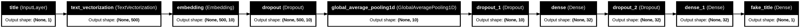
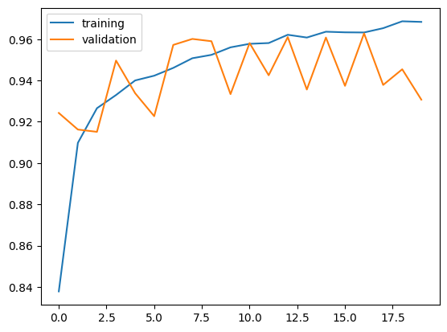
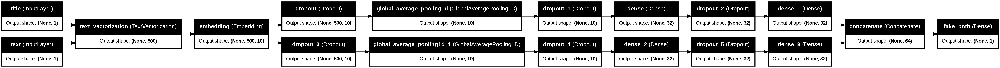
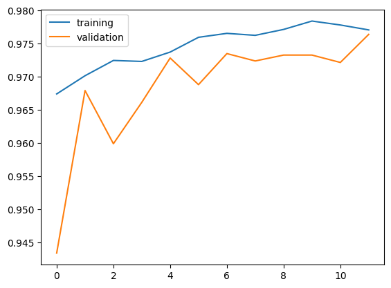

!pip install keras --upgradeIn this tutorial, I will be demonstrating how to categorize fake news titles using Keras.
Setting Up
We start with some of the necessary imports:
import os
os.environ["KERAS_BACKEND"] = "tensorflow"
import keras
from keras import layers, losses
from keras.layers import TextVectorization
import pandas as pd
import tensorflow as tf
from keras import utils
from matplotlib import pyplot as pltWe can now import the data:
train_url = "https://github.com/PhilChodrow/PIC16b/blob/master/datasets/fake_news_train.csv?raw=true"
data = pd.read_csv(train_url)Data Preparation
We construct the dataset we will use to train the model. Using the nltk stopwords list, we can remove stopwords from the dataset, and we can also convert all words to lowercase.
import nltk
nltk.download('stopwords')
from nltk.corpus import stopwords
def make_dataset(data):
stop = stopwords.words('english')
for column in ["title", "text"]: #for each column...
data[column] = data[column].apply(lambda x: str.lower(x)) #convert string to lowercase
data[column] = data[column].apply(lambda x: ' '.join([word for word in x.split() if word not in (stop)])) #remove stopwords
dataset = tf.data.Dataset.from_tensor_slices( #make a tensorflow dataset
(
{
"title" : data[["title"]], #input is a dictionary with corresponding title and text entries
"text" : data[["text"]]
},
data[["fake"]] #output is fake column
)
)
dataset.batch(100) #batching increases training speed
return dataset[nltk_data] Downloading package stopwords to /root/nltk_data...
[nltk_data] Unzipping corpora/stopwords.zip.The dataset can be constructed by calling this function on the imported dataframe.
dataset = make_dataset(data)We split the dataset into three sets: The training set takes 60% of the data, the validation set takes 20% of the data, and the testing set takes another 20% of the data.
dataset = dataset.shuffle(buffer_size = len(data), reshuffle_each_iteration=False)
train_size = int(0.6*len(data))
val_size = int(0.2*len(data))
train = dataset.take(train_size)
val = dataset.skip(train_size).take(val_size)
test = dataset.skip(train_size + val_size)Base Rate
We can determine the base rate by considering the proportion of entries with the most common label:
counter = 0
for _ , fake in train:
if fake == 1:
counter += 1
print(round(counter/train_size,2))0.52In this case, a model that always outputs “fake” will have 52% accuracy.
Model Preparation
We start by defining the text vectorization layer:
size_vocabulary = 2000
vectorize_layer = TextVectorization(
max_tokens=size_vocabulary, # standardization isn't necessary because text has already been prepared in make_dataset
output_mode='int',
output_sequence_length=500)
vectorize_layer.adapt(train.map(lambda x, y: x["title"]))We can then define the various other layers that will be used in each model:
title_input = keras.Input(shape=(1,), name="title", dtype="string") #title input layer
text_input = keras.Input(shape=(1,), name="text", dtype="string") # text input layer
embedding_layer = layers.Embedding(size_vocabulary, 10, name="embedding")
#title layers
title_features = vectorize_layer(title_input)
title_features = embedding_layer(title_features)
title_features = layers.Dropout(0.2)(title_features)
title_features = layers.GlobalAveragePooling1D()(title_features)
title_features = layers.Dropout(0.2)(title_features)
title_features = layers.Dense(32)(title_features)
title_features = layers.Dropout(0.2)(title_features)
title_features = layers.Dense(32, activation="relu")(title_features)
#text layers
text_features = vectorize_layer(text_input)
text_features = embedding_layer(text_features)
text_features = layers.Dropout(0.2)(text_features)
text_features = layers.GlobalAveragePooling1D()(text_features)
text_features = layers.Dropout(0.2)(text_features)
text_features = layers.Dense(32, activation="relu")(text_features)
text_features = layers.Dropout(0.2)(text_features)
text_features = layers.Dense(32, activation="relu")(text_features)
fake_pred_title = layers.Dense(1, name="fake_title")(title_features) #title output
fake_pred_text = layers.Dense(1, name="fake_text")(text_features) #text output
main = layers.concatenate([title_features, text_features], axis=1) #combine title, text streams
fake_pred_both = layers.Dense(1, name="fake_both")(main) #combined outputModel 1: Title Only
The first model vectorizes the title text, runs it through an embedding layer, then a global_average_pooling layer, ending with two dense layers, with dropout layers interspersed to combat overfitting. I tried using an LSTM layer, but it was way too slow, even with a GPU.
model1 = keras.Model(
inputs = title_input,
outputs = fake_pred_title
)
utils.plot_model(model1, "model1.png",
show_shapes=True,
show_layer_names=True,
rankdir="LR")
model1.compile(
optimizer="adam",
loss = losses.BinaryCrossentropy(from_logits=True),
metrics=["accuracy"]
)
callback = keras.callbacks.EarlyStopping(monitor='val_loss', patience=5) #combat overfitting with early stopping
history1 = model1.fit(train, epochs = 50, validation_data = val, callbacks=[callback], verbose = True)
plt.plot(history1.history["accuracy"],label='training')
plt.plot(history1.history["val_accuracy"],label='validation')
plt.legend()Epoch 1/50
13469/13469 ━━━━━━━━━━━━━━━━━━━━ 26s 2ms/step - accuracy: 0.4802 - loss: 0.6954 - val_accuracy: 0.4778 - val_loss: 0.6925
Epoch 2/50
13469/13469 ━━━━━━━━━━━━━━━━━━━━ 19s 1ms/step - accuracy: 0.4789 - loss: 0.6933 - val_accuracy: 0.4778 - val_loss: 0.6922
Epoch 3/50
13469/13469 ━━━━━━━━━━━━━━━━━━━━ 23s 2ms/step - accuracy: 0.4792 - loss: 0.6929 - val_accuracy: 0.4778 - val_loss: 0.6882
Epoch 4/50
13469/13469 ━━━━━━━━━━━━━━━━━━━━ 41s 2ms/step - accuracy: 0.5122 - loss: 0.6756 - val_accuracy: 0.6280 - val_loss: 0.5536
Epoch 5/50
13469/13469 ━━━━━━━━━━━━━━━━━━━━ 41s 2ms/step - accuracy: 0.6755 - loss: 0.5721 - val_accuracy: 0.6683 - val_loss: 0.5100
Epoch 6/50
13469/13469 ━━━━━━━━━━━━━━━━━━━━ 41s 2ms/step - accuracy: 0.7124 - loss: 0.5281 - val_accuracy: 0.7866 - val_loss: 0.4155
Epoch 7/50
13469/13469 ━━━━━━━━━━━━━━━━━━━━ 19s 1ms/step - accuracy: 0.7472 - loss: 0.4902 - val_accuracy: 0.8138 - val_loss: 0.3655
Epoch 8/50
13469/13469 ━━━━━━━━━━━━━━━━━━━━ 23s 2ms/step - accuracy: 0.7798 - loss: 0.4467 - val_accuracy: 0.7677 - val_loss: 0.3965
Epoch 9/50
13469/13469 ━━━━━━━━━━━━━━━━━━━━ 20s 2ms/step - accuracy: 0.7954 - loss: 0.4193 - val_accuracy: 0.7930 - val_loss: 0.3669
Epoch 10/50
13469/13469 ━━━━━━━━━━━━━━━━━━━━ 20s 2ms/step - accuracy: 0.8180 - loss: 0.3883 - val_accuracy: 0.8695 - val_loss: 0.2797
Epoch 11/50
13469/13469 ━━━━━━━━━━━━━━━━━━━━ 18s 1ms/step - accuracy: 0.8263 - loss: 0.3691 - val_accuracy: 0.8093 - val_loss: 0.3015
Epoch 12/50
13469/13469 ━━━━━━━━━━━━━━━━━━━━ 26s 2ms/step - accuracy: 0.8277 - loss: 0.3556 - val_accuracy: 0.8187 - val_loss: 0.2964
Epoch 13/50
13469/13469 ━━━━━━━━━━━━━━━━━━━━ 18s 1ms/step - accuracy: 0.8405 - loss: 0.3421 - val_accuracy: 0.8115 - val_loss: 0.3081
Epoch 14/50
13469/13469 ━━━━━━━━━━━━━━━━━━━━ 21s 2ms/step - accuracy: 0.8474 - loss: 0.3283 - val_accuracy: 0.8568 - val_loss: 0.2549
Epoch 15/50
13469/13469 ━━━━━━━━━━━━━━━━━━━━ 20s 1ms/step - accuracy: 0.8556 - loss: 0.3197 - val_accuracy: 0.8476 - val_loss: 0.2523
Epoch 16/50
13469/13469 ━━━━━━━━━━━━━━━━━━━━ 19s 1ms/step - accuracy: 0.8570 - loss: 0.3140 - val_accuracy: 0.8325 - val_loss: 0.2865
Epoch 17/50
13469/13469 ━━━━━━━━━━━━━━━━━━━━ 22s 2ms/step - accuracy: 0.8616 - loss: 0.3076 - val_accuracy: 0.8260 - val_loss: 0.2872
Epoch 18/50
13469/13469 ━━━━━━━━━━━━━━━━━━━━ 39s 1ms/step - accuracy: 0.8637 - loss: 0.3033 - val_accuracy: 0.8425 - val_loss: 0.2722
Epoch 19/50
13469/13469 ━━━━━━━━━━━━━━━━━━━━ 20s 2ms/step - accuracy: 0.8724 - loss: 0.2887 - val_accuracy: 0.8334 - val_loss: 0.2853
Epoch 20/50
13469/13469 ━━━━━━━━━━━━━━━━━━━━ 20s 2ms/step - accuracy: 0.8729 - loss: 0.2861 - val_accuracy: 0.8287 - val_loss: 0.2804
The model performed decently, slowly stabilizing at around 83% accuracy.
Model 2: Text Only
This model follows exactly the same structure as Model 1, except that it is fed only the text input instead of only the title input.
model2 = keras.Model(
inputs = text_input,
outputs = fake_pred_text
)
utils.plot_model(model2, "model2.png",
show_shapes=True,
show_layer_names=True,
rankdir="LR")model2.compile(
loss = losses.BinaryCrossentropy(from_logits=True),
optimizer="adam",
metrics=["accuracy"]
)
history2 = model2.fit(train, epochs = 50, validation_data = val, callbacks=[callback], verbose = True)
plt.plot(history2.history["accuracy"],label='training')
plt.plot(history2.history["val_accuracy"],label='validation')
plt.legend()Epoch 1/50
13469/13469 ━━━━━━━━━━━━━━━━━━━━ 22s 2ms/step - accuracy: 0.7672 - loss: 0.4448 - val_accuracy: 0.9243 - val_loss: 0.2278
Epoch 2/50
13469/13469 ━━━━━━━━━━━━━━━━━━━━ 41s 2ms/step - accuracy: 0.9014 - loss: 0.2398 - val_accuracy: 0.9162 - val_loss: 0.1838
Epoch 3/50
13469/13469 ━━━━━━━━━━━━━━━━━━━━ 22s 2ms/step - accuracy: 0.9239 - loss: 0.1924 - val_accuracy: 0.9151 - val_loss: 0.1862
Epoch 4/50
13469/13469 ━━━━━━━━━━━━━━━━━━━━ 40s 2ms/step - accuracy: 0.9292 - loss: 0.1760 - val_accuracy: 0.9497 - val_loss: 0.1599
Epoch 5/50
13469/13469 ━━━━━━━━━━━━━━━━━━━━ 39s 1ms/step - accuracy: 0.9369 - loss: 0.1608 - val_accuracy: 0.9338 - val_loss: 0.1516
Epoch 6/50
13469/13469 ━━━━━━━━━━━━━━━━━━━━ 22s 2ms/step - accuracy: 0.9423 - loss: 0.1482 - val_accuracy: 0.9227 - val_loss: 0.1641
Epoch 7/50
13469/13469 ━━━━━━━━━━━━━━━━━━━━ 29s 2ms/step - accuracy: 0.9454 - loss: 0.1461 - val_accuracy: 0.9572 - val_loss: 0.1311
Epoch 8/50
13469/13469 ━━━━━━━━━━━━━━━━━━━━ 33s 2ms/step - accuracy: 0.9508 - loss: 0.1338 - val_accuracy: 0.9601 - val_loss: 0.1329
Epoch 9/50
13469/13469 ━━━━━━━━━━━━━━━━━━━━ 39s 1ms/step - accuracy: 0.9518 - loss: 0.1290 - val_accuracy: 0.9590 - val_loss: 0.1285
Epoch 10/50
13469/13469 ━━━━━━━━━━━━━━━━━━━━ 21s 1ms/step - accuracy: 0.9588 - loss: 0.1193 - val_accuracy: 0.9334 - val_loss: 0.1437
Epoch 11/50
13469/13469 ━━━━━━━━━━━━━━━━━━━━ 20s 1ms/step - accuracy: 0.9581 - loss: 0.1198 - val_accuracy: 0.9581 - val_loss: 0.1333
Epoch 12/50
13469/13469 ━━━━━━━━━━━━━━━━━━━━ 22s 2ms/step - accuracy: 0.9589 - loss: 0.1140 - val_accuracy: 0.9425 - val_loss: 0.1271
Epoch 13/50
13469/13469 ━━━━━━━━━━━━━━━━━━━━ 40s 2ms/step - accuracy: 0.9629 - loss: 0.1039 - val_accuracy: 0.9610 - val_loss: 0.1250
Epoch 14/50
13469/13469 ━━━━━━━━━━━━━━━━━━━━ 22s 2ms/step - accuracy: 0.9613 - loss: 0.1055 - val_accuracy: 0.9356 - val_loss: 0.1374
Epoch 15/50
13469/13469 ━━━━━━━━━━━━━━━━━━━━ 22s 2ms/step - accuracy: 0.9663 - loss: 0.0986 - val_accuracy: 0.9608 - val_loss: 0.1196
Epoch 16/50
13469/13469 ━━━━━━━━━━━━━━━━━━━━ 20s 2ms/step - accuracy: 0.9651 - loss: 0.0996 - val_accuracy: 0.9374 - val_loss: 0.1395
Epoch 17/50
13469/13469 ━━━━━━━━━━━━━━━━━━━━ 20s 1ms/step - accuracy: 0.9663 - loss: 0.0955 - val_accuracy: 0.9628 - val_loss: 0.1213
Epoch 18/50
13469/13469 ━━━━━━━━━━━━━━━━━━━━ 22s 2ms/step - accuracy: 0.9660 - loss: 0.0905 - val_accuracy: 0.9378 - val_loss: 0.1348
Epoch 19/50
13469/13469 ━━━━━━━━━━━━━━━━━━━━ 41s 2ms/step - accuracy: 0.9698 - loss: 0.0837 - val_accuracy: 0.9454 - val_loss: 0.1237
Epoch 20/50
13469/13469 ━━━━━━━━━━━━━━━━━━━━ 39s 1ms/step - accuracy: 0.9707 - loss: 0.0857 - val_accuracy: 0.9307 - val_loss: 0.1511
This model oscillated at around 94% accuracy. I was more or less expecting this result, since more data to work with usually results in better accuracy. Training was a lot loss stable than in Model 1, which is another expected consequence of working with a lot of data.
Model 3: Title and Text
This model again functions similarly to the previous two models, except that it takes both inputs instead of just one. Both inputs are passed to the vectorization and embedding layers, then go through their global_average_pooling layer/dense/dropout layers before being concatenated, and ultimately ending with the dense classification layer.
model3 = keras.Model(
inputs = [title_input, text_input],
outputs = fake_pred_both
)
utils.plot_model(model3, "model3.png",
show_shapes=True,
show_layer_names=True,
rankdir="LR") #graphviz doesn't like TB on this one for some reason
model3.compile(
loss = losses.BinaryCrossentropy(from_logits=True),
optimizer="adam",
metrics=["accuracy"]
)
history3 = model3.fit(train, epochs = 50, validation_data = val, callbacks=[callback], verbose = True)
plt.plot(history3.history["accuracy"],label='training')
plt.plot(history3.history["val_accuracy"],label='validation')
plt.legend()Epoch 1/50
13469/13469 ━━━━━━━━━━━━━━━━━━━━ 27s 2ms/step - accuracy: 0.9642 - loss: 0.0920 - val_accuracy: 0.9434 - val_loss: 0.1449
Epoch 2/50
13469/13469 ━━━━━━━━━━━━━━━━━━━━ 40s 2ms/step - accuracy: 0.9727 - loss: 0.0803 - val_accuracy: 0.9679 - val_loss: 0.1003
Epoch 3/50
13469/13469 ━━━━━━━━━━━━━━━━━━━━ 24s 2ms/step - accuracy: 0.9733 - loss: 0.0724 - val_accuracy: 0.9599 - val_loss: 0.1201
Epoch 4/50
13469/13469 ━━━━━━━━━━━━━━━━━━━━ 40s 2ms/step - accuracy: 0.9726 - loss: 0.0795 - val_accuracy: 0.9661 - val_loss: 0.1018
Epoch 5/50
13469/13469 ━━━━━━━━━━━━━━━━━━━━ 42s 2ms/step - accuracy: 0.9751 - loss: 0.0715 - val_accuracy: 0.9728 - val_loss: 0.0928
Epoch 6/50
13469/13469 ━━━━━━━━━━━━━━━━━━━━ 24s 2ms/step - accuracy: 0.9771 - loss: 0.0663 - val_accuracy: 0.9688 - val_loss: 0.1068
Epoch 7/50
13469/13469 ━━━━━━━━━━━━━━━━━━━━ 42s 2ms/step - accuracy: 0.9780 - loss: 0.0632 - val_accuracy: 0.9735 - val_loss: 0.0854
Epoch 8/50
13469/13469 ━━━━━━━━━━━━━━━━━━━━ 39s 2ms/step - accuracy: 0.9778 - loss: 0.0618 - val_accuracy: 0.9724 - val_loss: 0.1120
Epoch 9/50
13469/13469 ━━━━━━━━━━━━━━━━━━━━ 41s 2ms/step - accuracy: 0.9767 - loss: 0.0685 - val_accuracy: 0.9733 - val_loss: 0.0961
Epoch 10/50
13469/13469 ━━━━━━━━━━━━━━━━━━━━ 41s 2ms/step - accuracy: 0.9802 - loss: 0.0565 - val_accuracy: 0.9733 - val_loss: 0.0925
Epoch 11/50
13469/13469 ━━━━━━━━━━━━━━━━━━━━ 41s 2ms/step - accuracy: 0.9782 - loss: 0.0610 - val_accuracy: 0.9722 - val_loss: 0.0979
Epoch 12/50
13469/13469 ━━━━━━━━━━━━━━━━━━━━ 24s 2ms/step - accuracy: 0.9795 - loss: 0.0580 - val_accuracy: 0.9764 - val_loss: 0.0863
This model performed better than both of the previous models, though not by much. The final model stabilized at around 97.2% accuracy.
Overall, since Model 3 had the highest accuracy, it seems clear to me that algorithms detecting fake news should consider both the title and text of articles.
Assessing Accuracy
model3.evaluate(test)4491/4491 ━━━━━━━━━━━━━━━━━━━━ 4s 817us/step - accuracy: 0.9810 - loss: 0.0572[0.058508388698101044, 0.9806278944015503]Model 3 had 98% accuracy on the unseen testing data, which is pretty good!
We can also test it on another testing dataset:
test_url = "https://github.com/PhilChodrow/PIC16b/blob/master/datasets/fake_news_test.csv?raw=true"
test_data = pd.read_csv(test_url)
test_dataset = make_dataset(test_data)
model3.evaluate(test_dataset)22449/22449 ━━━━━━━━━━━━━━━━━━━━ 21s 931us/step - accuracy: 0.9759 - loss: 0.0730[0.07201951742172241, 0.9764800071716309]With this, we can be sure that our model can predict fake news with 97% accuracy.
#Embedding Visualization
import plotly.io as pio
pio.renderers.default="iframe"import numpy as np
weights = model3.get_layer('embedding').get_weights()[0] # get the weights from the embedding layer
vocab = vectorize_layer.get_vocabulary() # get the vocabulary from our data prep for later
from sklearn.decomposition import PCA #reduce dimensionality to make visualization easier
pca = PCA(n_components=2)
weights = pca.fit_transform(weights)
embedding_df = pd.DataFrame({ #convert to dataframe
'word' : vocab,
'x0' : weights[:,0],
'x1' : weights[:,1]
})
import plotly.express as px #make a scatterplot with plotly
fig = px.scatter(embedding_df,
x = "x0",
y = "x1",
size = list(np.ones(len(embedding_df))),
size_max = 3,
hover_name = "word")
fig.show()On the positive x0 side of the graph, hillary, obama's, and trump's are clear outliers. This may be because they are the names of important figures, who are more likely to appear in sensationalist headlines. On the negative x0 side of the graph are myanmar, catalan, russias, chinas, and turkey, among others. This may suggest that real news articles are more likely to contain more specific details, like geographic locations. The word says appears on the negative x0 side of the graph. This could be interpreted to mean that real news articles are more likely to cite their sources.